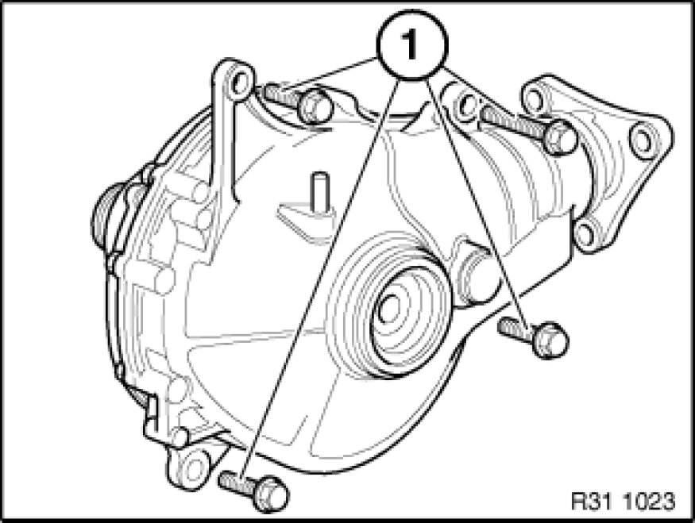

Removing and Installing/Replacing Front Differential
31 50 001 - Removing and installing/replacing front differential

Necessary preliminary tasks:
- Remove front underbody protection Removing and Installing/Replacing Front Underbody Protection
- Drain and dispose of front differential oil Changing Front Differential Oil
- Remove left output shaft Removing and Installing/Replacing Left or Right Output Shaft
- Press right output shaft approx. 7 to 8 cm out of front differential
- Remove front propeller shaft
- Replacement only:
- Replace front axle output flange on transfer case Replacing Radial Shaft Seal for Front Axle Output (ATC 400/500 X-Drive)
Note: Replace the output flange to ensure a clean seal on the transfer case.

Important!
Grip front differential firmly while releasing last bolt in order to avoid damage caused by the differential falling.

Version with automatic transmission: If necessary, disconnect hydraulic lines from oil sump.
Release screws (1).
Tightening torque 31 50 7AZ 31 50 Front Axle Differential.
Detach front differential from oil sump and carefully feed out towards bottom.
Installation:
Replace O-ring Replacing O-ring for Front Differential on Right if necessary.
Coat O-ring with front differential oil.
After installation:
- Fill with front differential oil Changing Front Differential Oil
- Check transfer case oil level Topping Up/Changing Transfer Case Oil, correct if necessary
- Check fluid level in automatic transmission, correct if necessary
Note: Only necessary if the hydraulic lines have been disconnected from the automatic transmission / transmission oil cooler.